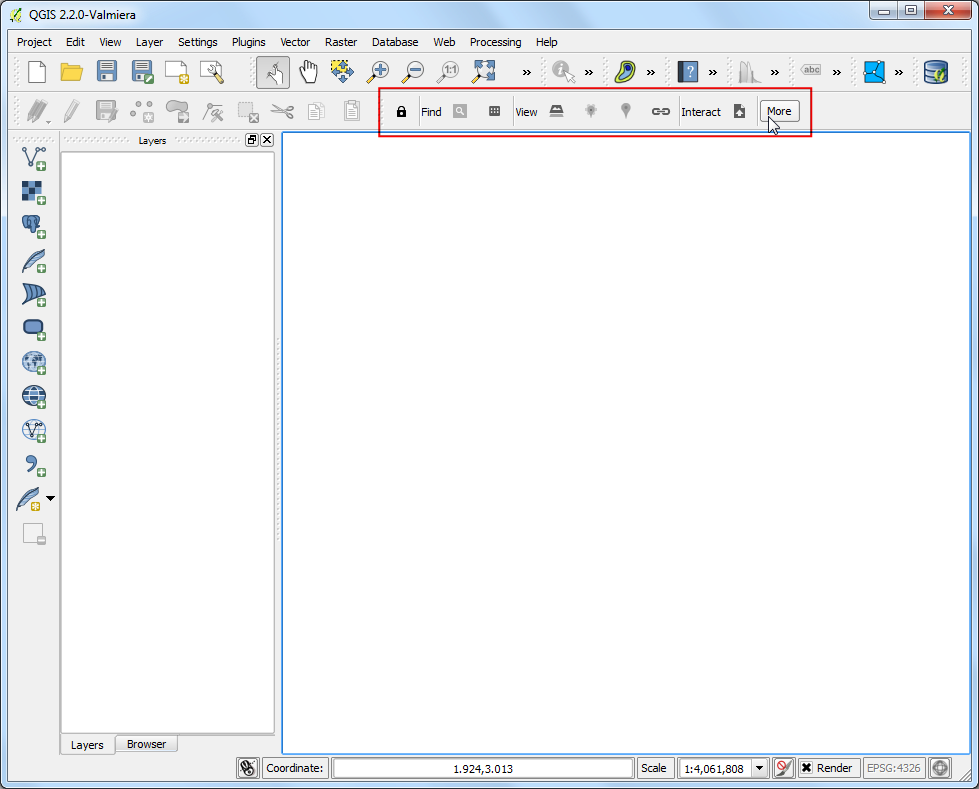
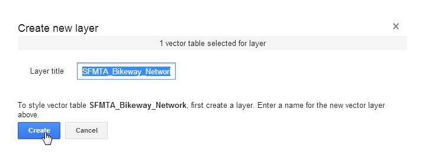

Folosirea conectorului Google Maps Engine pentru QGIS
Warning
Din 29 ianuarie 2015, Google Maps Engine a oprit crearea de noi conturi gratuite. Dacă aveți deja un cont, Google Maps Engine Connector va continua să funcționeze până la 29 ianuarie 2016.
Google Maps Engine este o platformă de cartografiere, bazată pe cloud, pentru crearea și partajarea hărților personalizate. Google Maps Engine Connector reprezintă un plugin care vă permite să vizualizați și să încărcați date Google Maps Engine în QGIS. În acest tutorial veți merge prin procesul de creare a unui cont Google Maps Engine, de obținere a acreditărilor necesare pentru utilizarea conectorului, de creare a unei hărți cu ajutorul Google Maps Engine și de a utiliza în QGIS harta rezultată.
Note
Precizare: Eu sunt autorul Google Maps Engine Connector și, în prezent, fac parte din echipa Google Maps.
Privire de ansamblu asupra activității
Vom lua un strat de tip linie, care reprezintă traseele de bicicletă din San Francisco, și-l vom încărca în Google Maps Engine cu ajutorul plugin-ului. O dată ce stratul este stilizat iar harta este creată, vom adăuga un strat WMS al hărții în QGIS.
Alte competențe pe care le veți dobândi
Crearea unui cont Google Maps Engine
Vă puteți crea un cont gratuit de testare pentru Google Maps Engine. Contul de testare reprezintă o instanță a motorului de hărți, complet funcțională, dar cu o cotă de stocare limitată. Vizitați Google Maps Engine homepage și faceți clic pe link-ul Get started with a free account.

Trebuie să vă conectați la contul dvs Google. De asemenea, dacă doriți să vă folosiți e-mailul de lucru, aveți posibilitatea să vă creați un nou cont Google cu adresa dorită. După ce v-ați logat, veți vedea ecranul Create a Maps Engine Project. Introduceți un Project Name, care va identifica contul dvs. atunci când utilizați Google Maps Engine. Acceptați termenii și faceți clic pe butonul Accept and create.

Crearea unui proiect Google Developer Console
Google Maps Engine Connector folosește Google Maps Engine API pentru a accesa datele stocate în contul dumneavoastră. Veți avea nevoie de acreditări speciale, pe care plugin-ul le va folosi pentru a vă accesa programatic datele. Vizitați Google Developer Console și faceți clic pe Create Project. Introduceți GME Connector for QGIS API ca PROJECT NAME, și gme-qgis-api ca PROJECT ID. Aceste nume sunt doar o sugestie - puteți utiliza orice nume și orice id vă place.

O dată ce proiectul este creat, faceți clic pe link-ul APIs & auth. Derulați în jos și găsiți Google Maps Engine API. Clic pe butonul OFF pentru a-l pune pe ON.

Apoi, faceți clic pe link-ul Credentials. Clic pe CREATE NEW CLIEND ID din secțiunea OAuth.

În fereastra de dialog Create Client ID, selectați Installed Application ca APPLICATION TYPE și Other ca INSTALLED APPLICATION TYPE. Apăsați Create Client ID.

O dată ce id-ul clientului este creat, veți vedea o nouă secțiune numită Client ID for native application. Observați Client ID și Client secret. Acestea sunt acreditările de care aveți nevoie în QGIS.

Înapoi în QGIS, vizitați . Găsiți plugin-ul Google Maps Engine Connector și faceți click pe Install plugin.

O dată ce plugin-ul este instalat, veți vedea o nouă bară de instrumente în QGIS. Această bară de instrumente conține diferite instrumente pentru lucrul cu Google Maps Engine. Faceți clic pe butonul More.

În fereastra de dialog Advanced Settings, introduceți Client ID și Client Secret pe care le-ați obținut din Google Developer Console. Clic pe OK.

După ce ați introdus noile acreditări API, vi se va cere să vă logați și să autorizați plugin-ul pentru a le folosi pe acestea. Conectați-vă la contul dvs. Google.

Clic pe Accept, în ecranul următor.

Dacă totul a mers bine, veți vedea un mesaj care indică faptul că v-ați conectat cu succes.

Acum, haideți să adăugăm stratul SFMTA Bikeway Network, care a fost descărcat mai devreme. Mergeți la . Navigați la fișierul descărcat SFMTA_Bikeway_Network.zip și faceți clic pe Open. Selectați stratul SFMTA_Bikeway_Network.shp, și apoi apăsați OK.

Una dintre caracteristicile plugin-ului Google Maps Engine Connector este abilitatea de a încărca seturi de date direct din QGIS. Selectați stratul SFMTA_Bikeway_Network și faceți clic pe pictograma Upload din bara de instrumente.

În fereastra de dialog Upload a dataset to Google Maps Engine, introduceți o Descriere a setului de date. Puteți lăsa toate celelalte setări la valorile implicite. Clic pe OK.

Plugin-ul va folosi Google Maps Engine API pentru a încărca stratul și va crea o Sursă de date pentru motorul Google Maps. După ce încărcarea s-a încheiat, o nouă filă de browser se va deschide și vă va duce la sursa de date nou creată.

Pașii următori vor demonstra procesul de creare a unei hărți cu ajutorul Google Maps Engine. O dată ce harta este creată, o vom accesa folosind plugin-ul din QGIS. O dată ce tabela vectorială a fost prelucrată, faceți clic pe Create styled layer.

Denumiți stratul ca SFMTA_Bikeway_Network și faceți clic pe Create.

Clic pe Add rule pentru adăugarea unui stil personalizat pentru strat.

Alegeți culoarea și opțiunile de etichetare din secțiunea Line style. Clic pe Apply pentru a vizualiza setările de stil aplicate stratului dvs. De asemenea, puteți selecta opțiunea No Basemap din colțul din dreapta-sus, pentru a vă permite să vedeți stratul fără harta de bază. O dată ce vă mulțumește stilul, treceți la fila Info windows.

Aici puteți specifica ce conținut să fie afișat atunci când se face clic pe o entitate din hartă. Puteți accesa atributele entității folosind marcajul {attribute_name}. În acest caz, vrem doar să afișăm numele străzii pentru entitatea tip linie. Introduceți următoarele în zona de text. Apăsați Apply și apoi faceți clic pe orice entitate de tip linie de pe hartă, pentru a testa codul fereastrei info. Când ați terminat, bifați Publish on exit și faceți clic pe Exit.
<div class='googeb-info-window' style='font-family: sans-serif'>
{STREETNAME} {TYPE}
</div>

Clic pe Add to map pentru a crea o hartă cu acest strat.

Selectați Create new și introduceți SFMTA Bikeway Network ca Map title.

Veți vedea o nouă hartă conținând stratul stilizat. Aveți o opțiune de a alege diferite hărți de bază pentru hartă. Deoarece aceasta este o hartă a traseelor de bicicletă, puteți selecta stilul de bază al hărții Terrain.

Apăsați Publish map.

O dată ce harta este publicată, apăsați pictograma Access links.

Veți observa mai multe opțiuni pentru a vizualiza, încapsula și accesa harta nou creată. Din moment ce vom accesa harta folosind plugin-ul QGIS, nu aveți nevoie de link-uri de aici.

Înapoi în QGIS, faceți clic pe pictograma Search din bara de instrumente.

În fereastra de dialog Maps Engine Maps, veți vedea listată harta dvs. Faceți clic pe rând, pentru a o selecta. Clic pe Add Selected to Map.

Plugin-ul va interoga Google Maps Engine și va încărca un strat vectorial care conține dreptunghiul de încadrare a hărții. Dacă nu vedeți nici un fel de date pe suportul hărții, faceți clic-dreapta pe stratul SFMTA_Bikeway_Network și selectați Zoom to Layer Extent.

Faceți clic pe stratul dreptunghiului de încadrare pentru a-l selecta. Veți observa că instrumentele View sunt activate. Apăsați pictograma WMS Overlay din bara de instrumente.

În fereastra de dialog Select A Layer to Add, alegeți stratul SFMTA_Bikeway_Network și apăsați Add Selected to Map.

Un nou strat WMS va fi adăugat în QGIS, stratul stilizat din Google Maps Engine fiind afișat în QGIS.

Sper că acest tutorial v-a oferit o imagine de ansamblu a capacităților pluginului. Puteți vizita plugin homepage pentru a vizualiza codul sursă și pentru a afla mai multe despre plugin.
Below is the Google Maps Engine map that was created for this tutorial.